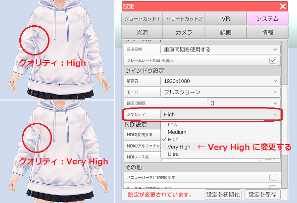
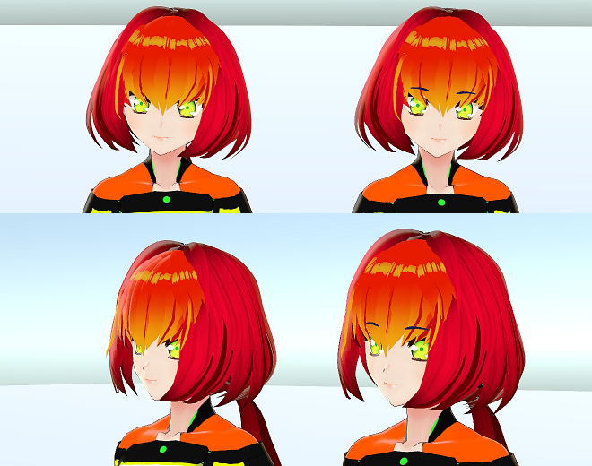

3Dアバター向け汎用規格「VRM（Virtual Railroad Models）」の事で、
ドワンゴ株式会社から2018年4月に発表されました。
VRM は Khronos グループによって策定された汎用3Dフォーマット「glTF 2.0」を拡張して
VRソフトウェアや VTuber 配信に最適化したフォーマットです。
人型に限定する事によりアバターを扱うソフトウェアで高い互換性を維持しています。
※Khronos は「OpenGL」や「Vulkan」等、３Ｄ技術を策定する非営利団体の技術コンソーシアムです。
VRM の公式サイト
日本語：https://vrm.dev/
英語：https://vrm.dev/en/
VRM の技術仕様 (glTF 2.0 との差異および拡張仕様)
日本語 英語
２つの方法が存在します。
①VRoidStudio を使う。
モデル作成が未経験でも比較的、簡単に作成できます。
ただし、ベースとなる素体を逸脱したものは作成できない制限があり、ゆるキャラ等は作れない。
②3Dモデリングソフト(Blender、MAYA等)で作る。
上級者もしくは3Dモデリング経験者向けで難易度が高いですが、
思うがままにモデルを作成する事ができます。
無料で使用できる Blender が使われる事が多いようです。
※モデルを作成したら FBX で保存し、Unity でインポート後に修正、調整を行なって VRM に変換します。
「VRM を作成したけど、もっと改良してみたい！！」という場合は
こちらのVRoidStudio で作成した VRM を改良する！を試してみてください。
一部の服装で描画崩れが発生する場合は 3tene の
設定「システム」タブでクオリティを「Very High」以上に変更してみてください。

口を閉じたバージョンの表情を作ろう！
3tene 拡張に対応した口が閉じたバージョンの表情を作ろう！
※iPhone フェイストラッキングの自動表情連携にも使えます。
3tene では UnityChan ToonShader に含まれる４種のシェーダーが使用可能です。
3tene 拡張の Unity Chan Toon Shader を使った
アニメまゆ毛の作り方を参照してください。
このシェーダーを使う事でアニメ風のまゆ毛（前髪よりも前に描画）が可能となります。
